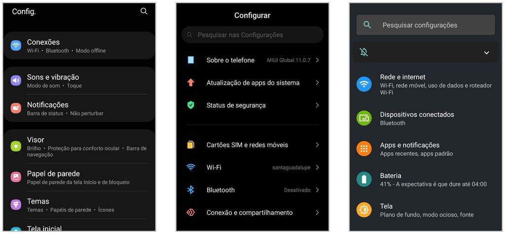

Celular
Como configurar seu celular novo?
Este guia prático ajudará você a configurar seu celular novo de forma adequada, evitando problemas futuros. Ao seguir os passos cuidadosamente, você poderá desfrutar de todas as funcionalidades e recursos do dispositivo, enquanto mantém a privacidade, segurança e conectividade em dia. Com orientações básicas e dicas extras, garantimos uma experiência tranquila e personalizada para que você aproveite ao máximo seu novo telefone. Vamos começar essa jornada juntos!
1. Coloque o chip
Antes de ligar o celular, coloque o seu chip SIM na bandeja adequada, que geralmente fica localizada na lateral do aparelho. Para abri-la, é necessário utilizar uma espécie de chave metálica, que geralmente vem incluída na caixa. Como alguns modelos permitem inserir mais de um chip, então, se você possui um SIM pessoal e outro para trabalho, pode fazer essa separação sem muitos problemas.
Se tiver duvidas de como fazer isso, siga o tutorial em um video clicando aqui!
2. Siga os primeiros passos
Ao ligar o celular pela primeira vez, você será recebido por uma tela de boas-vindas, na qual será solicitado que escolha um idioma. Escolha o que mais for adequado e lembre-se de que ele será o idioma padrão do aparelho; caso queira, poderá mudá-lo, acessando as configurações do Android.
Se tiver duvidas de como fazer isso, siga o tutorial em um video clicando aqui!
3. Conecte-se ao Wi-Fi
Muitas configurações exigem que o celular esteja conectado à internet, portanto, para que você não gaste seu pacote de dados, é interessante que faça a configuração de uma rede Wi-Fi. Portanto, selecione a rede desejada, digite a senha e toque em “Conectar” para poder prosseguir.
Se tiver duvidas de como fazer isso, siga o tutorial em um video clicando aqui!
4. Copie apps e dados do seu celular antigo
Se você possui um celular antigo e quer manter os dados dele, saiba que é possível migrar os dados entre dispositivos próximos. Isso é bastante interessante, pois evita o trabalho de ter que ficar baixando e incluindo todas as informações manualmente. Então, considere não pular esta etapa.
Se tiver duvidas de como fazer isso, siga o tutorial em um video clicando aqui!
5. Faça o login com a sua conta do Google
O Android é desenvolvido pelo Google, então, é de se esperar que ele possua uma boa integração com todo o ecossistema da empresa. Vendo por esse lado, é essencial que você faça login uma conta Google — ou crie uma, caso não tenha.
Além de permitir acessar plataformas como o Gmail, Drive e Fotos, por exemplo, você também vai poder sincronizar seus dados com outros dispositivos, fazer o backup, além de gerenciar suas informações pessoais em um único ambiente.
Se tiver duvidas de como fazer isso, siga o tutorial em um video clicando aqui!
6. Configure o Google Assistente
Caso seja do seu interesse, configure o Google Assistente. Os passos são bastante simples, basta apenas que você diga a frase “Ok Google” pelo menos três vezes para que o assistente virtual reconheça a sua voz. Assim, você evita que o comando seja ativado por pessoas estranhas, ou que façam brincadeiras desagradáveis com você.
Se tiver duvidas de como fazer isso, siga o tutorial em um video clicando aqui!
7.Crie uma senha para o celular
Manter seu smartphone protegido é algo que deve ser colocado como prioridade. Por isso, é fortemente recomendado que você crie uma senha para o seu celular — e o Android oferece algumas opções, como padrão, PIN e senha. Além disso, dependendo do modelo, também é possível adicionar camadas extras de segurança, cadastrando a sua biometria e reconhecimento facial.
Se tiver duvidas de como fazer isso, siga o tutorial em um video clicando aqui!
8. Ajuste as notificações
Notificações são importantes. Mas notificações demais podem atrapalhar o seu dia a dia, e até mesmo fazer com que você perca o foco em tarefas essenciais. Escolha se você quer que conteúdos confidenciais sejam exibidos nas notificações, ou até mesmo opte por não receber nenhuma. Independente de qual opção escolher, você poderá alterar esta configuração novamente no futuro.
Se tiver duvidas de como fazer isso, siga o tutorial em um video clicando aqui!
9. Faça login com outras contas
Alguns fabricantes, como a Samsung, Xiaomi, Asus e outros, solicitam que você faça login uma conta extra atrelada aos seus serviços. Isso pode ser bastante útil, pois algumas dessas empresas oferecem funções e recursos exclusivos, como localizar e desbloquear o telefone, por exemplo. De todo caso, esta etapa pode ser pulada.
Se tiver duvidas de como fazer isso, siga o tutorial em um video clicando aqui!
10. Conheça diferentes interfaces
Ainda falando sobre fabricantes, é interessante saber que nem todos os celulares Android são iguais. E isso acontece porque ele é um software aberto, permitindo que as empresas façam inúmeras modificações e adicionem ou retirem recursos da maneira que for mais estratégico para elas.
Assim, os aparelhos vão oferecer diferentes interfaces, como a OneUI (Samsung), MIUI (Xiaomi) e a ZenUI (Asus) — alguns aparelhos, como os da Motorola, podem trazer o Android “puro”, ou seja, sem modificação. Embora utilizem o mesmo sistema operacional, na prática, alguns modelos podem oferecer diferentes layouts, recursos e apps — no caso da Samsung, até uma loja de apps própria.
Se tiver duvidas de como fazer isso, siga o tutorial em um video clicando aqui!
11. Instale atualizações do Android
Por último, mas não menos importante: instale as atualizações do Android. Além de usufruir dos novos recursos da interface do celular, falhas de segurança no software costumam ser corrigidas nesse processo. Então, mantê-lo atualizado pode te poupar de algumas dores de cabeça.
Se tiver duvidas de como fazer isso, siga o tutorial em um video clicando aqui!
Tópicos
1
Coloque o chip
2
Primeiros passos
3
Conecte-se ao Wi-Fi
4
Copie apps e dados do seu celular antigo
5
Faça o login com a sua conta do Google
6
Configure o Google Assistente
7
Crie uma senha para o celular
8
Ajuste as notificações
9
Faça login com outras contas
10
Conheça diferentes interfaces
11
Instale atualizações do Android
T
Volte ao topo!
Como criar contas?
Criar uma conta de e-mail é um processo simples, mas pode ser uma tarefa importante para quem deseja se comunicar de forma eficiente e aproveitar os recursos oferecidos pela internet. Neste tutorial, vamos fornecer um passo a passo para criar uma conta no Gmail, um dos serviços de e-mail mais populares e confiáveis do mundo.
Passo 1: Acesse o site do Gmail
Abra o seu navegador de internet preferido e digite "gmail.com" na barra de endereços. Pressione "Enter" ou clique em "Ir" para acessar o site do Gmail.
Se tiver dúvidas de como fazer isso, siga o tutorial em um vídeo clicando aqui!
Passo 2: Clique em "Criar conta"
Na página inicial do Gmail, você encontrará duas opções: "Fazer login" e "Criar conta". Clique em "Criar conta" para prosseguir com a criação de uma nova conta de e-mail.
Se tiver dúvidas de como fazer isso, siga o tutorial em um vídeo clicando aqui!
Passo 3: Preencha o formulário de criação de conta
Agora você será direcionado para o formulário de criação de conta. Preencha todas as informações necessárias, como seu nome, sobrenome, nome de usuário (o que vem antes do "@gmail.com"), senha, número de telefone e data de nascimento. Certifique-se de fornecer informações precisas e que você possa acessar facilmente, pois elas podem ser necessárias para recuperar sua conta caso você a perca no futuro.
Se tiver dúvidas de como fazer isso, siga o tutorial em um vídeo clicando aqui!
Passo 4: Escolha um nome de usuário
O nome de usuário será parte do seu endereço de e-mail completo. Escolha um nome que seja único e fácil de lembrar. Se o nome de usuário escolhido já estiver em uso, o Gmail irá sugerir algumas opções alternativas para você escolher.
Se tiver dúvidas de como fazer isso, siga o tutorial em um vídeo clicando aqui!
Passo 5: Crie uma senha segura
É importante escolher uma senha forte para proteger sua conta de e-mail contra acessos não autorizados. Use uma combinação de letras maiúsculas e minúsculas, números e símbolos para aumentar a segurança. Evite usar senhas óbvias, como datas de aniversário ou sequências numéricas simples.
Para ver se a senha que você está usando é realmente segura ou deseja criar uma nova senha, tente usar nossa ferramenta para testes de senha clicando aqui!
Passo 6: Aceite os termos de serviço e política de privacidade
Antes de criar sua conta, você precisará ler e concordar com os termos de serviço e a política de privacidade do Gmail. Certifique-se de ler atentamente todas as informações fornecidas.
Se tiver dúvidas de como fazer isso, siga o tutorial em um vídeo clicando aqui!
Passo 7: Verificação e conclusão
Após preencher todas as informações necessárias e aceitar os termos, o Gmail pode solicitar uma verificação adicional para confirmar sua identidade. Isso pode ser feito por meio de um código enviado para o número de telefone fornecido ou por e-mail. Siga as instruções fornecidas para concluir o processo de criação da conta.
Se tiver dúvidas de como fazer isso, siga o tutorial em um vídeo clicando aqui!
Baixando Aplicativo
Baixar aplicativos é uma das atividades mais comuns que realizamos em nossos dispositivos móveis. A Google Play Store, disponível para dispositivos Android, é uma das maiores lojas de aplicativos do mundo, oferecendo uma ampla variedade de apps para atender às necessidades e preferências dos usuários. Neste guia passo a passo, vamos explicar como baixar aplicativos da Google Play Store em seu dispositivo Android.
Passo 1: Acesse a Google Play Store
No seu dispositivo Android, localize o ícone da Google Play Store na tela inicial ou no menu de aplicativos e toque nele para abrir a loja.
Passo 2: Explore ou pesquise um aplicativo
Na página inicial da Google Play Store, você encontrará uma seleção de aplicativos em destaque. Você pode explorar esses destaques ou utilizar a barra de pesquisa no topo da tela para procurar um aplicativo específico. Digite o nome do aplicativo desejado ou uma palavra-chave relacionada e pressione o botão de pesquisa.
Passo 3: Selecione o aplicativo desejado
Após realizar a pesquisa, você verá uma lista de resultados correspondentes. Toque no aplicativo que deseja baixar para abrir sua página de detalhes.
Passo 4: Leia as informações do aplicativo
Na página de detalhes do aplicativo, você encontrará informações úteis, como descrição, capturas de tela, avaliações e comentários de outros usuários. Leia essas informações para ter uma ideia melhor sobre o aplicativo e decidir se é o que você procura.
Passo 5: Verifique as permissões do aplicativo
Na página de detalhes, também é importante verificar as permissões solicitadas pelo aplicativo. As permissões são ações ou recursos que o aplicativo precisa acessar em seu dispositivo. Se você estiver confortável com as permissões solicitadas, prossiga para o próximo passo.
Passo 6: Toque em "Instalar"
Após revisar as informações do aplicativo e as permissões, toque no botão "Instalar" na página de detalhes. Dependendo das configurações do seu dispositivo, pode ser necessário conceder permissões adicionais ou autenticar sua conta do Google.
Passo 7: Aguarde o download e a instalação
Após tocar em "Instalar", o aplicativo começará a ser baixado e instalado em seu dispositivo. Aguarde o processo ser concluído. A velocidade de download e instalação pode variar de acordo com a velocidade da sua conexão com a internet.
Passo 8: Acesse o aplicativo
Assim que a instalação for concluída, você encontrará o ícone do aplicativo na tela inicial ou no menu de aplicativos do seu dispositivo. Toque no ícone para abrir o aplicativo e começar a usá-lo.
Verificar a segurança do seu celular
A segurança é uma preocupação importante quando se trata de dispositivos móveis, uma vez que eles armazenam uma quantidade significativa de informações pessoais e confidenciais. Verificar a segurança do seu celular é essencial para proteger seus dados e garantir que você esteja tomando medidas adequadas para evitar ameaças cibernéticas. Neste guia, iremos fornecer uma visão geral dos passos que você pode seguir para verificar a segurança do seu celular.
Passo 1: Mantenha o sistema operacional atualizado
É crucial manter o sistema operacional do seu celular sempre atualizado. As atualizações geralmente incluem correções de segurança que abordam vulnerabilidades conhecidas. Verifique regularmente se há atualizações disponíveis indo para as configurações do seu dispositivo e selecionando a opção "Atualização do sistema" ou "Atualização de software".
Se tiver dúvidas de como fazer isso, siga o tutorial em um vídeo clicando aqui!
Passo 2: Use um bloqueio de tela seguro
Definir um bloqueio de tela seguro é uma maneira eficaz de proteger seu celular contra acesso não autorizado. Opte por um PIN, senha, padrão ou biometria (como impressão digital ou reconhecimento facial) para desbloquear o dispositivo. Evite usar padrões óbvios ou códigos simples, como 1234, para garantir uma maior segurança.
Se tiver dúvidas de como fazer isso, siga o tutorial em um vídeo clicando aqui!
Passo 3: Ative a verificação em duas etapas
A maioria dos serviços e aplicativos oferece a opção de verificação em duas etapas, também conhecida como autenticação de dois fatores (2FA). Ao ativar essa função, você adiciona uma camada adicional de segurança à sua conta. Além de inserir sua senha, você precisará fornecer uma segunda forma de autenticação, como um código enviado por SMS, aplicativo de autenticação ou chave de segurança física.
Se tiver dúvidas de como fazer isso, siga o tutorial em um vídeo clicando aqui!
Passo 4: Utilize um antivírus
Embora os dispositivos Android geralmente tenham proteção embutida contra malware, é uma boa prática adicional usar um aplicativo antivírus confiável. Existem várias opções disponíveis na Google Play Store que podem escanear e proteger seu celular contra ameaças em tempo real.
Se tiver dúvidas de como fazer isso, siga o tutorial em um vídeo clicando aqui!
Passo 5: Gerencie permissões de aplicativos
Revise as permissões concedidas aos aplicativos instalados em seu celular. Alguns aplicativos podem solicitar acesso a recursos e dados que não são necessários para seu funcionamento. Vá para as configurações do seu celular, abra o menu "Aplicativos" e selecione o aplicativo desejado. Lá você poderá gerenciar as permissões concedidas e desativar aquelas que considerar desnecessárias ou invasivas.
Se tiver dúvidas de como fazer isso, siga o tutorial em um vídeo clicando aqui!
Passo 6: Faça backup dos seus dados
Realize backups regulares dos dados importantes do seu celular, como contatos, fotos e documentos. Isso garante que, em caso de perda, roubo ou corrupção dos dados, você possa recuperá-los facilmente. Use serviços de backup em nuvem confiáveis ou transfira seus dados para um computador regularmente.
Se tiver dúvidas de como fazer isso, siga o tutorial em um vídeo clicando aqui!
Passo 7: Evite redes Wi-Fi públicas não seguras
Redes Wi-Fi públicas podem ser alvos fáceis para hackers. Evite realizar transações financeiras ou acessar informações confidenciais enquanto estiver conectado a redes Wi-Fi públicas não seguras. Prefira usar uma conexão de dados móveis ou uma rede Wi-Fi confiável e protegida por senha.
Se tiver dúvidas de como fazer isso, siga o tutorial em um vídeo clicando aqui!
Cuidados adicionais
Além das medidas de segurança básicas, existem algumas boas práticas que você pode adotar para garantir a segurança e a privacidade ao usar seu celular.
Passo 1: Baixe aplicativos apenas de fontes confiáveis
Utilize a loja oficial de aplicativos do seu sistema operacional, como a Google Play Store para dispositivos Android ou a App Store para dispositivos iOS. Evite baixar aplicativos de fontes desconhecidas, pois eles podem conter malware ou serem maliciosos.
Se tiver dúvidas de como fazer isso, siga o tutorial em um vídeo clicando aqui!
Passo 2: Leia as permissões de aplicativos
Antes de instalar um aplicativo, verifique as permissões solicitadas por ele. Se um aplicativo pedir permissões excessivas ou que não parecem relevantes para sua funcionalidade, pode ser um sinal de alerta. Revise e avalie se você está confortável em conceder essas permissões ao aplicativo.
Se tiver dúvidas de como fazer isso, siga o tutorial em um vídeo clicando aqui!
Passo 3: Gerencie suas permissões de aplicativos
No sistema operacional do seu celular, você pode gerenciar as permissões concedidas a cada aplicativo. Revise periodicamente as permissões de cada aplicativo instalado e restrinja o acesso a informações sensíveis, como localização, câmera, contatos e microfone. Apenas conceda permissões que sejam realmente necessárias para o funcionamento do aplicativo.
Se tiver dúvidas de como fazer isso, siga o tutorial em um vídeo clicando aqui!
Passo 4: Tenha cuidado ao clicar em links e anexos
Evite clicar em links suspeitos ou abrir anexos de e-mails ou mensagens de texto de remetentes desconhecidos ou não confiáveis. Esses links ou anexos podem direcioná-lo a sites maliciosos ou iniciar downloads de malware para o seu celular.
Se tiver dúvidas de como fazer isso, siga o tutorial em um vídeo clicando aqui!
Passo 5: Use uma conexão Wi-Fi segura
Ao se conectar a redes Wi-Fi públicas, evite acessar informações confidenciais, como fazer compras online ou acessar sua conta bancária. Essas redes podem ser alvos fáceis para invasores. Se necessário, utilize uma rede virtual privada (VPN) para criptografar sua conexão e proteger seus dados.
Se tiver dúvidas de como fazer isso, siga o tutorial em um vídeo clicando aqui!
Passo 6: Faça backup regularmente
Realize backups regulares dos dados do seu celular, como contatos, fotos e documentos importantes. Isso pode ser feito por meio de serviços em nuvem ou usando ferramentas de backup do sistema operacional. Em caso de perda, roubo ou falha do dispositivo, você poderá restaurar seus dados em um novo celular.
Se tiver dúvidas de como fazer isso, siga o tutorial em um vídeo clicando aqui!
Passo 7: Esteja atento a phishing e golpes
Fique atento a tentativas de phishing, onde os golpistas se passam por empresas ou instituições legítimas para obter suas informações pessoais. Desconfie de mensagens de texto, e-mails ou ligações que solicitam informações confidenciais ou que pareçam suspeitos. Nunca compartilhe senhas ou dados pessoais através desses meios.
Se tiver dúvidas de como fazer isso, siga o tutorial em um vídeo clicando aqui!
Computador
Configurando as primeiras etapas do seu computador
Ao adquirir um novo computador, é importante realizar as primeiras etapas de configuração para garantir uma experiência segura e personalizada. Nesta seção, forneceremos um guia passo a passo para configurar as etapas iniciais do seu computador, desde a configuração do sistema operacional até a instalação de programas essenciais. Siga os seguintes passos para configurar com sucesso o seu computador:
Passo 1: Configurar o sistema operacional
Após ligar o computador pela primeira vez, você será guiado através do processo de configuração do sistema operacional. Siga as instruções na tela para selecionar seu idioma preferido, fuso horário e configurações de privacidade. Além disso, defina uma senha forte para sua conta de usuário para proteger seus dados.
Se tiver dúvidas de como fazer isso, siga o tutorial em um vídeo clicando aqui!
Passo 2: Conectar-se à Internet
Para aproveitar todos os recursos online, é necessário conectar-se à Internet. Selecione a rede Wi-Fi disponível na lista e insira a senha, caso necessário. Se preferir uma conexão mais estável, você pode conectar um cabo Ethernet à porta apropriada do seu computador.
Se tiver dúvidas de como fazer isso, siga o tutorial em um vídeo clicando aqui!
Passo 3: Atualizar o software
Após se conectar à Internet, é importante garantir que o sistema operacional esteja atualizado. Isso irá fornecer correções de segurança, melhorias de desempenho e novos recursos. Procure pela opção de atualização nas configurações do sistema operacional e inicie o processo de atualização.
Se tiver dúvidas de como fazer isso, siga o tutorial em um vídeo clicando aqui!
Passo 4: Criar uma conta de usuário
Para personalizar sua experiência e manter seus arquivos e configurações separados, crie uma conta de usuário. Geralmente, o sistema operacional oferece a opção de criar uma nova conta ou usar uma conta existente. Preencha as informações necessárias, como nome, senha e imagem de perfil, se desejar.
Se tiver dúvidas de como fazer isso, siga o tutorial em um vídeo clicando aqui!
Passo 5: Instalar programas essenciais
Após configurar o sistema operacional, é hora de instalar os programas essenciais para suas necessidades. Isso pode incluir um navegador da web, pacote de produtividade, reprodutor de mídia, software de segurança, entre outros. Baixe os programas de fontes confiáveis e siga as instruções de instalação.
Se tiver dúvidas de como fazer isso, siga o tutorial em um vídeo clicando aqui!
Baixando de sites seguros
Ao fazer o download de arquivos da internet, é essencial garantir que você esteja utilizando sites seguros e confiáveis. Nesta seção, forneceremos orientações para baixar de sites seguros e evitar possíveis riscos de segurança. Siga as etapas abaixo para baixar arquivos com segurança:
Passo 1: Verificar a fonte do arquivo
Antes de fazer o download de qualquer arquivo, verifique a fonte de onde ele está sendo disponibilizado. Prefira sites confiáveis, como sites oficiais de desenvolvedores, lojas de aplicativos conhecidas e repositórios de software confiáveis. Evite sites suspeitos, links compartilhados em e-mails não solicitados ou fontes desconhecidas.
Se tiver dúvidas de como fazer isso, siga o tutorial em um vídeo clicando aqui!
Passo 2: Ler a descrição do arquivo
Ao encontrar um arquivo para download, leia atentamente a descrição fornecida. Verifique se corresponde ao que você está procurando e se está de acordo com suas expectativas. Fique atento a descrições vagas, promessas exageradas ou informações suspeitas. Isso pode ser um sinal de que o arquivo não é confiável.
Se tiver dúvidas de como fazer isso, siga o tutorial em um vídeo clicando aqui!
Passo 3: Verificar as avaliações e comentários
Se o arquivo estiver disponível em um site que permite avaliações e comentários dos usuários, leia o feedback de outras pessoas. Avaliações positivas e comentários úteis podem indicar a confiabilidade do arquivo. Por outro lado, avaliações negativas, comentários suspeitos ou falta de feedback podem ser sinais de alerta.
Se tiver dúvidas de como fazer isso, siga o tutorial em um vídeo clicando aqui!
Passo 4: Verificar a assinatura digital
Alguns arquivos, especialmente aqueles de software, podem ser assinados digitalmente para verificar sua autenticidade. Verifique se o arquivo possui uma assinatura digital válida, emitida por uma entidade confiável. Isso ajuda a garantir que o arquivo não foi modificado ou corrompido por terceiros mal-intencionados.
Se tiver dúvidas de como fazer isso, siga o tutorial em um vídeo clicando aqui!
Passo 5: Utilizar um software antivírus
Antes e depois de fazer o download de qualquer arquivo, é altamente recomendável ter um software antivírus instalado e atualizado em seu computador. O antivírus ajudará a identificar e remover possíveis ameaças de malware presentes nos arquivos baixados. Execute uma verificação no arquivo baixado antes de abri-lo ou executá-lo.
Se tiver dúvidas de como fazer isso, siga o tutorial em um vídeo clicando aqui!
Criação de contas no computador
A criação de contas no computador é uma etapa importante para personalizar suas configurações, armazenar arquivos e acessar recursos exclusivos. Nesta seção, forneceremos um guia passo a passo sobre como criar contas de usuário no computador. Siga as etapas abaixo para criar uma conta com sucesso:
Passo 1: Escolher as configurações da conta
No processo de criação de conta, você precisará fornecer algumas informações básicas, como nome de usuário e senha. Escolha um nome de usuário único e memorável e defina uma senha segura para proteger sua conta contra acessos não autorizados. Certifique-se de lembrar ou anotar essas informações em um local seguro.
Se tiver dúvidas de como fazer isso, siga o tutorial em um vídeo clicando aqui!
Passo 2: Definir as configurações de privacidade
Ao criar uma conta, você pode optar por personalizar suas configurações de privacidade. Isso inclui decidir se deseja compartilhar seus dados com terceiros, permitir o acesso a determinadas informações e configurar níveis de privacidade para proteger sua segurança online. Leia atentamente as opções disponíveis e faça as escolhas adequadas para você.
Se tiver dúvidas de como fazer isso, siga o tutorial em um vídeo clicando aqui!
Passo 3: Adicionar uma foto de perfil (opcional)
Se desejar personalizar ainda mais sua conta, você pode adicionar uma foto de perfil. Essa foto será exibida em vários serviços e aplicativos para identificar sua conta. Escolha uma foto que represente você ou sua marca de maneira adequada e siga as instruções para fazer o upload da imagem.
Se tiver dúvidas de como fazer isso, siga o tutorial em um vídeo clicando aqui!
Passo 4: Definir preferências e personalizações
Ao criar sua conta, você pode definir várias preferências e personalizações de acordo com suas necessidades e preferências. Isso inclui opções de idioma, tema, layout e outras configurações específicas do sistema. Explore as opções disponíveis e ajuste-as de acordo com suas preferências pessoais.
Se tiver dúvidas de como fazer isso, siga o tutorial em um vídeo clicando aqui!
Como funciona o Google
O Google é uma empresa de tecnologia que oferece uma ampla gama de serviços e produtos online. Nesta seção, vamos explicar como o Google funciona e como você pode aproveitar ao máximo seus recursos. Vamos explorar os seguintes tópicos:
1. Pesquisa no Google
A principal função do Google é permitir que você faça pesquisas na web. O campo de pesquisa do Google é onde você digita suas consultas e o Google retorna uma lista de resultados relevantes com base nas palavras-chave que você inseriu. Você pode pesquisar praticamente qualquer coisa no Google, desde informações sobre pessoas, lugares, eventos, até perguntas, imagens e muito mais.
Se tiver dúvidas de como fazer isso, siga o tutorial em um vídeo clicando aqui!
2. Gmail
O Gmail é um serviço de e-mail gratuito oferecido pelo Google. Ele permite que você crie uma conta de e-mail personalizada e envie e receba mensagens de forma rápida e segura. Além disso, o Gmail possui recursos avançados, como organização de e-mails em pastas, pesquisa avançada, filtros e muito mais. É uma ferramenta poderosa para a comunicação online.
Se tiver dúvidas de como fazer isso, siga o tutorial em um vídeo clicando aqui!
3. Google Maps
O Google Maps é um serviço de mapas e navegação online. Ele permite que você encontre lugares, obtenha direções de rota, visualize imagens de satélite e explore áreas ao redor do mundo. Com o Google Maps, você pode planejar rotas para viagens, encontrar empresas locais, verificar o tráfego em tempo real e muito mais.
Se tiver dúvidas de como fazer isso, siga o tutorial em um vídeo clicando aqui!
4. Google Drive
O Google Drive é um serviço de armazenamento em nuvem que permite que você armazene e acesse seus arquivos online. Com o Google Drive, você pode criar documentos, planilhas, apresentações e armazenar fotos, vídeos e outros arquivos importantes. Além disso, você pode compartilhar arquivos com outras pessoas e colaborar em tempo real em projetos.
Se tiver dúvidas de como fazer isso, siga o tutorial em um vídeo clicando aqui!
5. Google Tradutor
O Google Tradutor é uma ferramenta que permite traduzir textos, documentos e até mesmo páginas da web em diferentes idiomas. Ele suporta uma ampla variedade de idiomas e é útil para comunicação e compreensão em diferentes idiomas ao redor do mundo. Basta copiar o texto desejado, selecionar os idiomas de origem e destino e o Google Tradutor fará a tradução para você.
Se tiver dúvidas de como fazer isso, siga o tutorial em um vídeo clicando aqui!
Cuidados a se tomar com o computador
Para garantir o bom funcionamento do seu computador e proteger seus dados, é importante tomar alguns cuidados. Nesta seção, vamos abordar os principais cuidados que você deve ter com o seu computador. Vamos explorar os seguintes tópicos:
1. Utilizar um Antivírus
Um dos principais cuidados que você deve ter com o seu computador é a instalação de um antivírus confiável. Um antivírus protege o seu computador contra vírus, malware e outras ameaças online. Certifique-se de manter o antivírus sempre atualizado e realizar verificações regulares no sistema para identificar e eliminar possíveis ameaças.
Se tiver dúvidas de como fazer isso, siga o tutorial em um vídeo clicando aqui!
2. Manter o Sistema e os Programas Atualizados
É essencial manter o sistema operacional do seu computador e todos os programas instalados atualizados. As atualizações geralmente incluem correções de segurança e melhorias no desempenho. Configure o seu sistema para receber atualizações automáticas e verifique regularmente se há atualizações disponíveis para os programas que você utiliza.
Se tiver dúvidas de como fazer isso, siga o tutorial em um vídeo clicando aqui!
3. Realizar Backup dos seus Arquivos
Fazer backup regular dos seus arquivos é uma medida importante para proteger suas informações. Em caso de falhas no sistema, roubo ou perda do computador, você terá uma cópia dos seus arquivos em um local seguro. Utilize dispositivos externos, serviços de armazenamento em nuvem ou programas específicos para fazer o backup dos seus arquivos.
Se tiver dúvidas de como fazer isso, siga o tutorial em um vídeo clicando aqui!
4. Realizar Limpeza Regular do Computador
Limpar regularmente o seu computador é importante para manter o bom funcionamento do sistema. Remova arquivos temporários, desinstale programas que não são mais utilizados, limpe o cache do navegador e verifique o espaço disponível no disco rígido. Além disso, mantenha o seu computador livre de poeira e sujeira, especialmente nas entradas de ar e nas ventoinhas.
Se tiver dúvidas de como fazer isso, siga o tutorial em um vídeo clicando aqui!
5. Utilizar Senhas Fortes e Autenticação em Dois Fatores
Proteja suas contas e dados pessoais utilizando senhas fortes e autenticação em dois fatores sempre que possível. Senhas fortes devem conter uma combinação de letras maiúsculas e minúsculas, números e caracteres especiais. A autenticação em dois fatores adiciona uma camada extra de segurança, exigindo um código adicional além da senha para acessar sua conta.
Se tiver dúvidas de como fazer isso, siga o tutorial em um vídeo clicando aqui!
Ferramentas
Teste sua senha
Clique fora da tela para ver a solução
Use letra maiusculas e minusculas
Utilize numeros
Utilize algum caractere especial
Senha forte